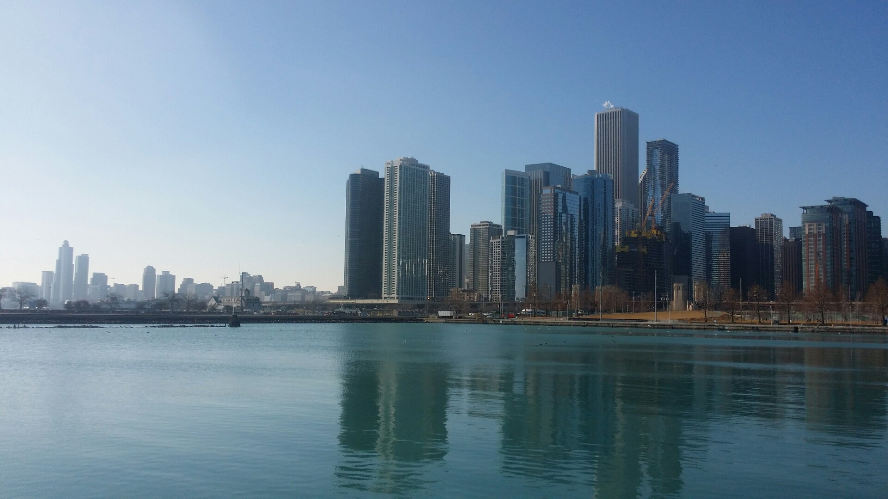

Peoria is
where I started studying in the States. I went to a community college here. My plan was save
money at community college, and transfer to another school after 2 years.

My first school was located nearby Chicago, so it was where me and my
friends went to hang out.
August, 2018 ~ May, 2019
After 2 years at
Peoria, I got accepted and transfered to SUNY, Buffalo.
The school was located nearby Niagara Falls. It gave me an inner peace when
listening to the sound of water falling. It became me and my friends' go to place during exam
period.
May, 2019 ~ June, 2019
After finishing one
academic year at the new school, I came back to South Korea to finish military duty. During a
month, I mostly rested at home and travelled some places in South Korea. Busan was
one place I visited right before I joined the army.
June, 2019 ~ January, 2021
I served in a Battalion
that has K9 Thunder. My role there was to drive k9 Thunder.
January, 2021 ~ November, 2021
After finishing one
and a half years of military duty, I joined an IT company as a QA tester(engineer).
I had an opportunity to go for a business trip at the last month at this company. I used the app
I was testing to shoot 3D dollhouses of accommodations in Jeju Island.
Dec, 2021 ~ Now
After I quit the IT company I was
working, I wanted started to prepare visa and documents to return to school. COVID-19 status in
the States was really bad at the time, and I wanted to take courses in person. I decided to take
another semester off and do personal projects.